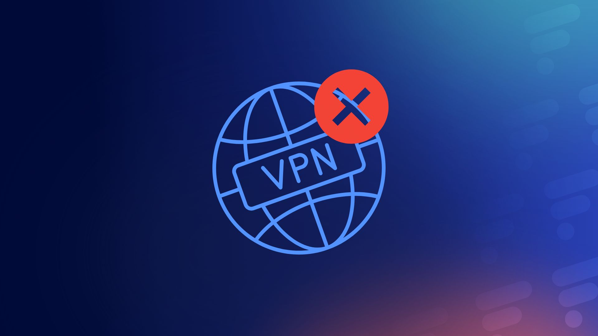

VPN Fevrier 2026La France veut bloquer les VPN : oui, mais pour protéger les mineurs (IT-Connect)
Le gouvernement français envisage de contraindre les fournisseurs de VPN à vérifier l'âge de leurs utilisateurs afin d'empêcher les mineurs de contourner les restrictions d'accès aux réseaux sociaux et aux sites pour adultes.
- Vie privée : La fin de l'anonymat pour les utilisateurs de VPN.
- Sécurité informatique : Cela aura pour risque de créer des failles. En tentant de bloquer ou de filtrer les flux chiffrés des VPN, on fragilise des outils essentiels au télétravail et à la protection des entreprises contre le cyberespionnage.
L'article de IT-Connect détaille une nouvelle orientation du gouvernement français dans sa stratégie de protection des mineurs sur Internet. Après avoir voté l'interdiction des réseaux sociaux pour les moins de 15 ans (sauf autorisation parentale), les autorités s'attaquent désormais aux outils de contournement, et plus particulièrement aux VPN (Réseaux Privés Virtuels).